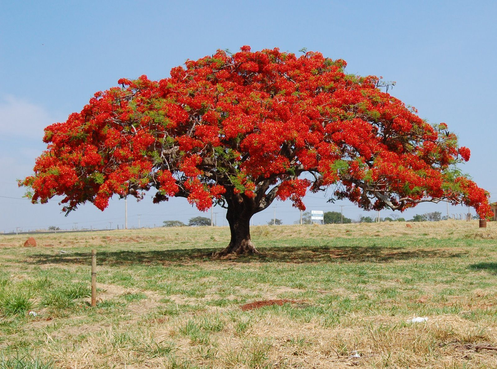
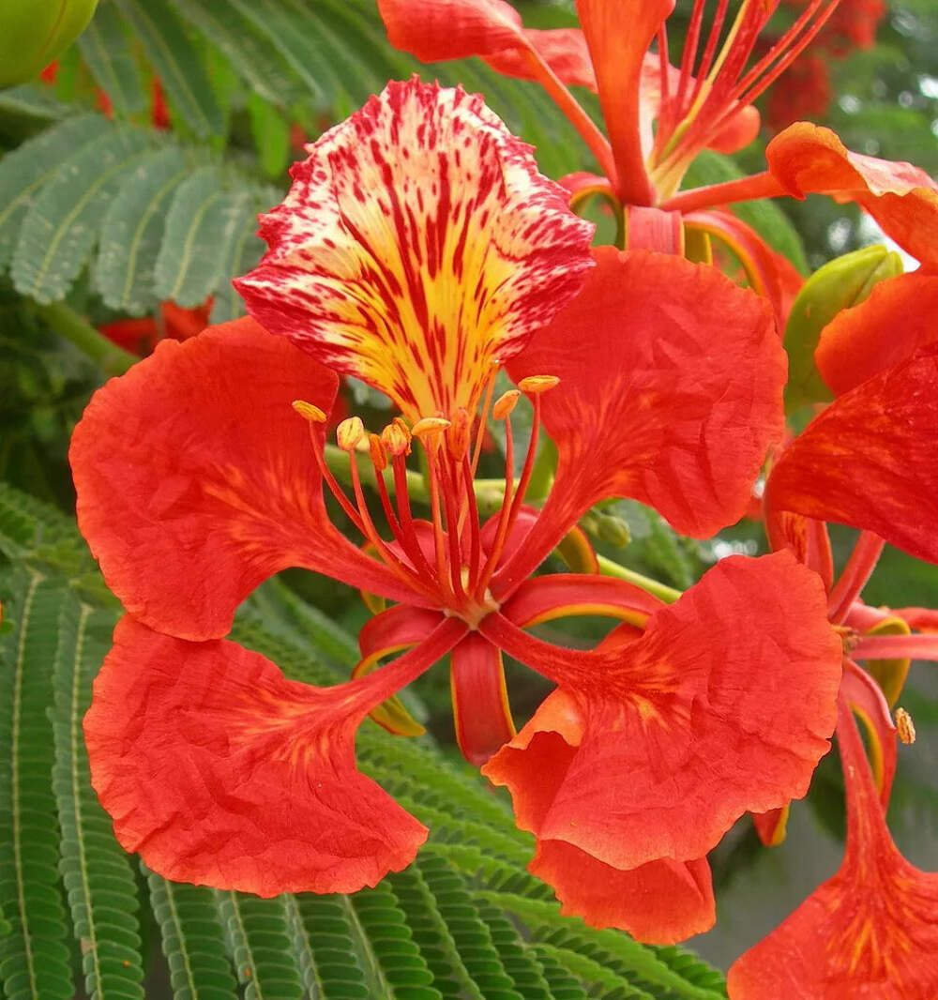

Flor de Malinche
Delonix regia


Descripción
La Flor de Malinche, también conocida como Flamboyán, es uno de los árboles más espectaculares de Nicaragua. Durante su floración, se cubre completamente de flores rojas y anaranjadas intensas que crean un espectáculo visual impresionante.
El árbol puede alcanzar hasta 12 metros de altura y su copa extendida proporciona sombra generosa, convirtiéndolo en un árbol muy apreciado en parques y avenidas.
Datos Curiosos
- Originaria de Madagascar pero completamente adaptada a Nicaragua
- Florece principalmente entre mayo y agosto
- Un solo árbol puede producir miles de flores simultáneamente
- Sus vainas pueden medir hasta 60 cm de largo
- Es considerado uno de los árboles más coloridos del mundo
Beneficios y Usos
- Ornamental: Embellece calles, parques y jardines urbanos
- Sombra: Proporciona excelente protección contra el sol tropical
- Ecológica: Refugio para aves y otros animales
- Cultural: Símbolo de los trópicos nicaragüenses
- Turística: Atracción visual en época de floración